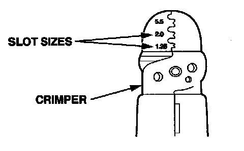
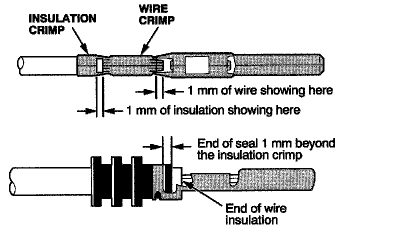
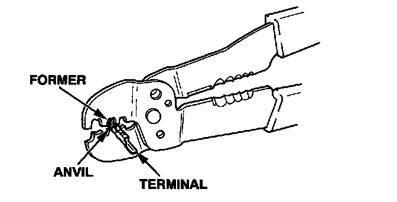
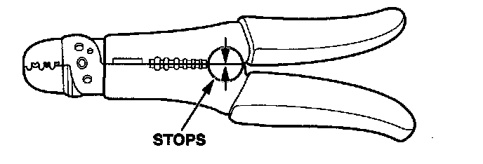
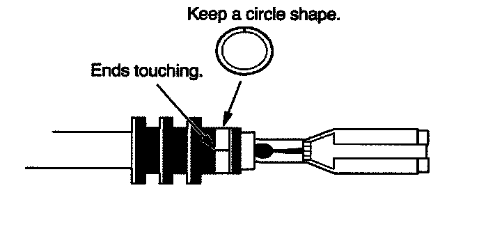
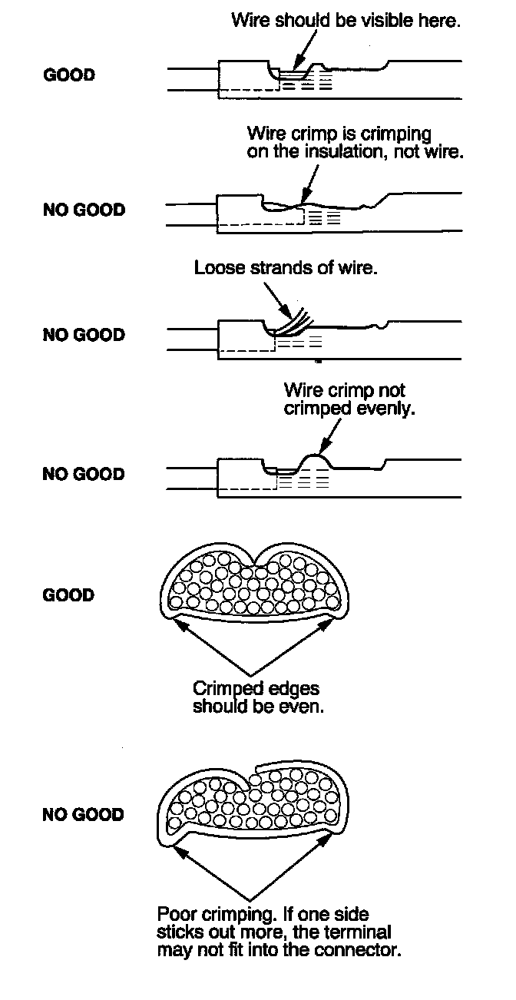

How to Install New Terminals
HOW TO INSTALL NEW TERMINALS1. Carefully match the old terminal with a new one from the terminal repair kit. Choose the correct replacement terminal based on the wire size range the terminal will accommodate.
NOTE: If the replacement terminal quantities are low, reorder them by using the terminal part number listed on the inside lid of the terminal repair kit. Replacement terminals are available through your parts department using normal parts ordering procedures.
2. Depending on the size of the wire you are repairing, use the proper size slot in the crimping tool.

3. Strip the insulation off the end of the wire so the wire fits in the new terminal as shown. (If the wire has a wire seal, replace it with a new one from the kit.)
NOTE: After stripping the end of the wire, make sure you did not cut any wire strands. If you did, cut the wire off even with the insulation, and strip it again.

4. Position the terminal in the crimping tool slot with the solid portion of the terminal toward the anvil and the open section toward the former.

5. Insert the wire in the terminal to the position shown in step 3.
6. Squeeze the tool with both hands until the stops make contact.

7. Crimp the insulation crimp.
- If you do not have a wire seal, then use the next larger size crimp slot. Position the crimping tool over the insulation crimp section of the terminal, then squeeze the tool with both hands until the stops make contact.
- It you have a wire seal, position the insulation crimp in the 5.5 crimping slot, then carefully squeeze the crimp closed until its ends are touching and making a full-circle shape.

8. Inspect the quality of the wire crimp. If it has any of the following NO GOOD crimps, cut it off and start over.

9. Insert the terminal into the connector. Make sure the wire seals are pushed all the way into the connector.Lightly pull on the wires to make sure the terminal is locked into place.
10. Close or insert the secondary terminal lock, it applicable, and reconnect the connector.